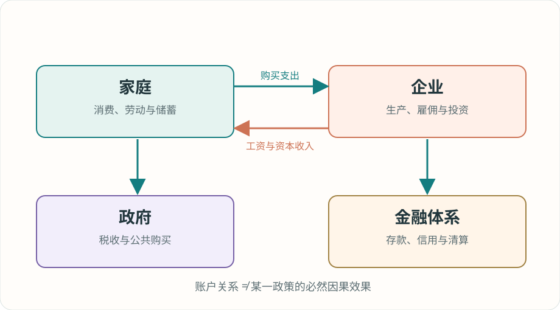
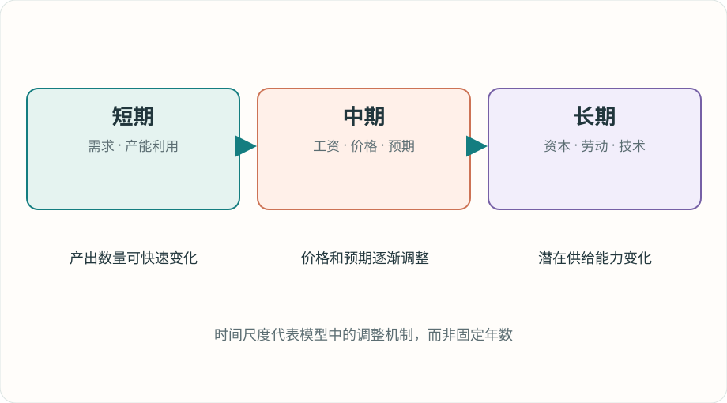

什么是宏观经济学
为什么人人都做了理性的选择，整体经济却可能陷入衰退？从四个宏观指标理解相互反馈的经济系统。
微观的好决定，为什么可能汇总成宏观的问题？
假设每个家庭为了提高未来财务安全，决定本月减少消费。单看一家，这可能是稳健的行为；但如果大量家庭同时缩减开支，商店销售额下滑，企业削减产量和工时，家庭获得的工资收入又下降，最初希望增加储蓄的目标就未必能够实现。这是节俭悖论的典型直觉：个人预算约束并不能替代整个经济的收入—支出反馈分析。
宏观经济学并非只研究国家和中央银行。它把大量个人和企业决策经过价格、市场与制度联结形成的总结果作为对象，问四个问题：生产了多少？价格如何变化？有多少劳动被利用？融资条件如何改变这些决策？
把四个部门放进同一张循环流图
家庭出售劳动并取得收入，再购买产品与服务；企业获得收入，用于工资、投资和利润分配；公共部门征税、提供公共产品并进行转移支付；银行与金融市场支持支付、储蓄和信贷。下图用不同颜色区分消费支出与要素收入，箭头表示经济账户关系而非统计因果方向。

支出是交易一方的流出、另一方的流入，因而不能把同一次生产对应的营业额和工资再加成两份 GDP。循环流为下一篇的 GDP 核算提供了结构基础。
四个观察窗口：产出、价格、就业、金融
| 变量 | 衡量的是什么 | 常见误读 |
|---|---|---|
| 实际 GDP | 排除价格变动影响后的境内产出 | 直接代表幸福或收入平等 |
| 消费者价格指数 | 特定消费篮子的物价变化 | 每个家庭感受到同等涨幅 |
| 失业率 | 失业人数占劳动力的比例 | 没有工作的人都算失业者 |
| 利率与信用 | 资金定价、融资与支付条件 | 信贷增长会机械地推动同幅产出增长 |
还要区分存量（某时点的债务余额）与流量（某季度新增借款或生产）。一个存量绝不能和不同时间跨度的流量不加说明地比较。
三个时间尺度，三种解释重点
短期分析常把价格和工资调整视作不充分，强调有效需求、库存与产能利用率；中期研究价格、工资和预期如何逐步调整；长期研究资本积累、劳动、知识与技术进步。它们不是固定一年、五年、十年的严格分段，而是建模时哪些变量被允许调整的区别。

一个极简乘数模型：让假设可见
在封闭经济、价格固定、有闲置产能、无新增税收且投资不随利率变化的简化环境下，设新增收入用于消费的比例为 c，外生支出增加 ΔG。第一轮增加 ΔG 收入，随后带来 cΔG、c²ΔG 等进一步消费，若 0≤c<1，级数可求和。
修改假设，看看均衡如何变化
单位是任意货币单位，模型不包含挤出效应、进口和物价反应。
当 c=0.6、ΔG=10，模型中 ΔY=25。这个结论源于严格的简化条件；若商品供给受限，部分需求可能转变为涨价而非实物产出。
分析宏观新闻时，始终依次问：定义是什么、统计范围是什么、哪些变量被设为不变、推论是恒等式还是因果预测？
来源与延伸阅读
以下资料用于核对经济学定义与制度口径。文章中的数字化教学模型均非实际宏观统计。